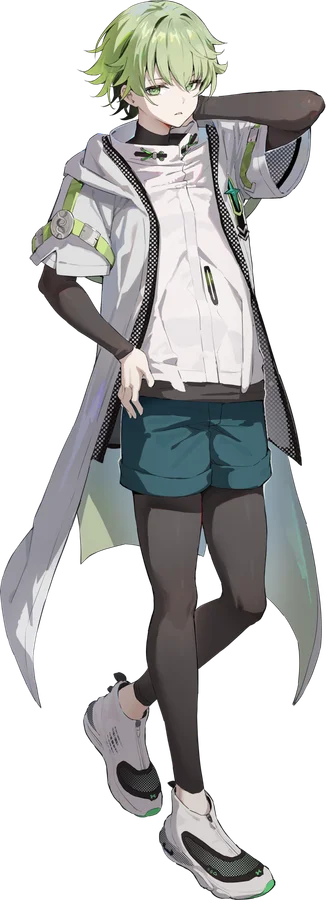
摩西 · 枪匠
【太秦艺术馆】兼职美术修复师。虽然是兼职的，但比起在【虹之镜】当服务生的时间还是多得多，被库拉拉称为酒吧的幽灵打工人。本人其实是处理“异常事件”的高手，【虹之镜】的高级战斗员之一。
指定一个角色施加破绽（下一次交战时，攻击和防御骰点最大为3）。
PVE指定一个怪物施加破绽（与摩西交战时，攻击和防御骰点变为0）。 如果拥有破绽（与摩西交战时，攻击和防御骰点变为0）的怪物挑战摩西，则摩西将进行反击。
闪避成功后，下次攻击的攻击力+4。
PVE闪避成功或反击后，获得1层精密技巧（每层使自身攻击力+2、闪避最小骰点+1。），最高叠加3层。
基础资料
PVE 特性
- 达到1星时攻击力+1
- 达到2星时攻击力+2
- 达到3星时攻击力+1、移动速度+2
默认
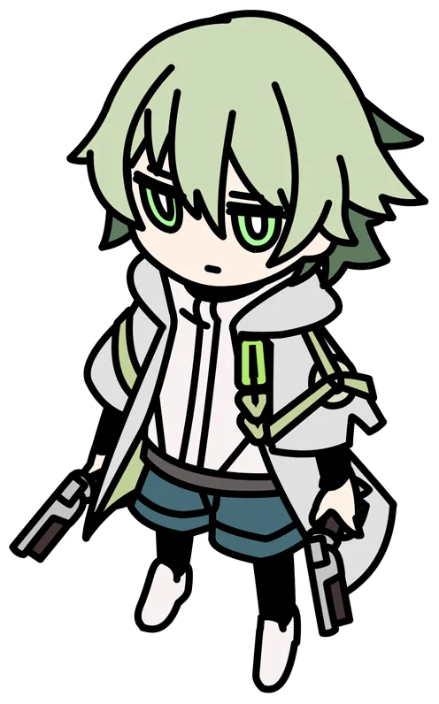
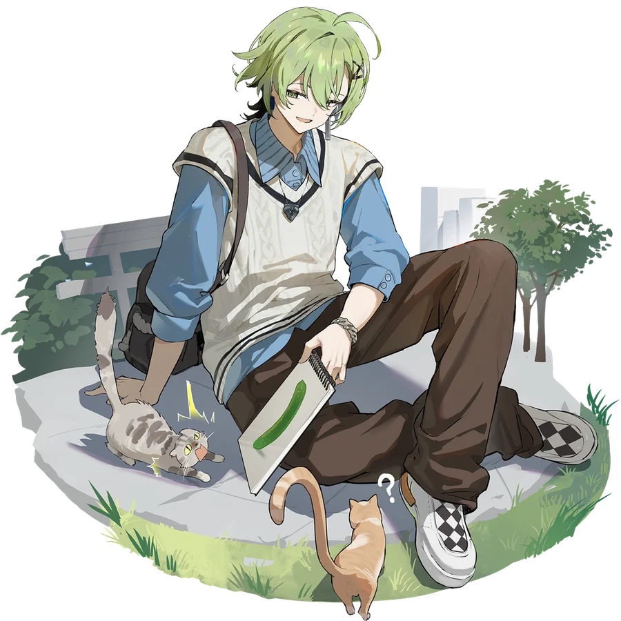
羁绊皮肤
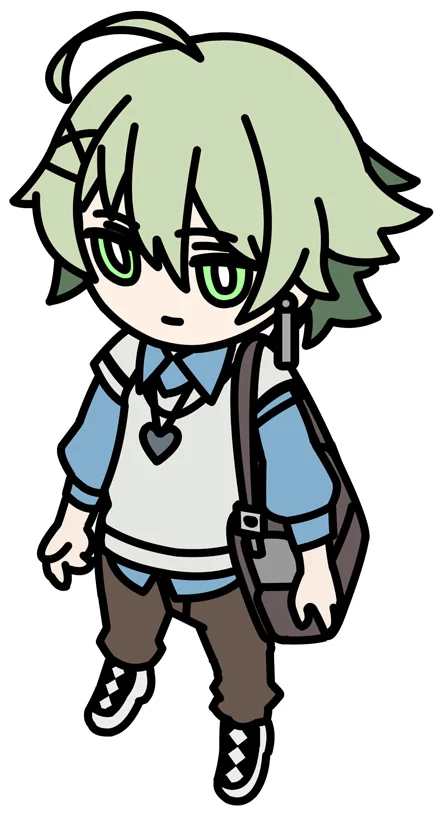
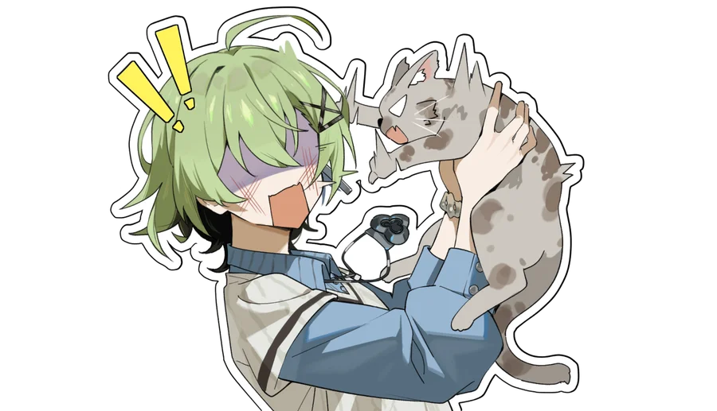
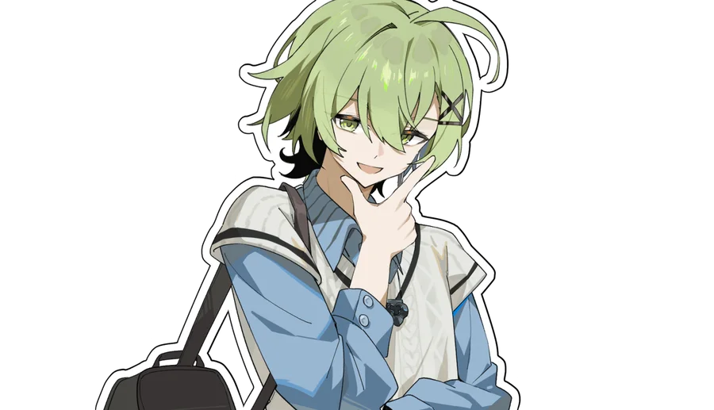
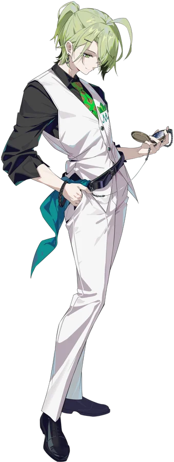
特殊委派
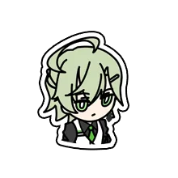
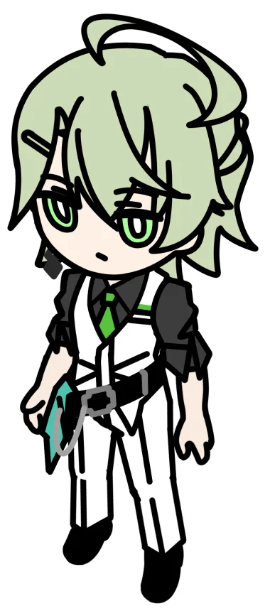
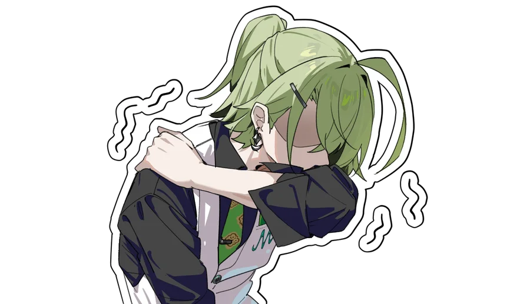
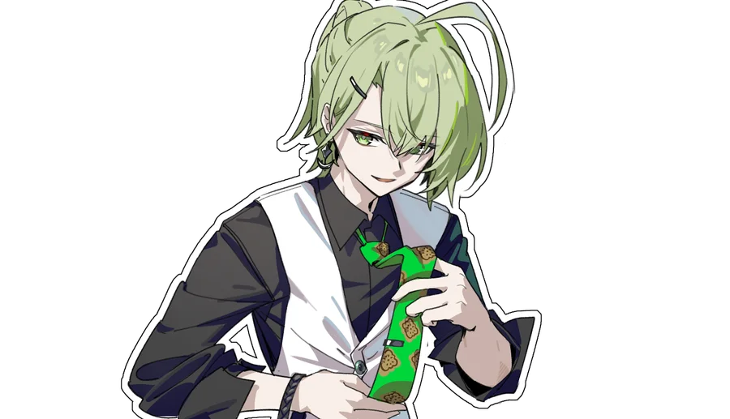
“今天的目标已经清楚了吗？”库拉拉的声音从耳机里传来。 “嗯，她就算化成灰我也认得。”摩西随口回复道，然后用一个笑脸回复旁边的“同事”服务生。 “这身还挺合适你的，哈哈哈。”库拉拉突然笑了起来。 “是吗？我倒是觉得少了点轻浮感。”摩西回话道。 “差不多了，再轻浮就浮夸了。”库拉拉继续调侃。 “目标出现，该行动了，轻浮的家伙。”耳机里又传来了南希露的声音。 “喂喂喂别这么叫啊，你这宅女。” “行了别斗嘴了都，专心完成任务。”此时老大的声音打断了所有人。 “了解。”众人回复道。 今天是特殊的委派任务，完成这一单，大家可以休息好久。 就像周五工作结束后期待周末的放松一样。 摩西带着无比愉悦的心情，开始了这次特殊的委派任务。
共 12 个表情，点击可放大。
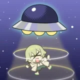
官方 wiki 没有这角色的 /获取 页，头像、名片、卡牌、骰子的完整清单暂缺；下方「档案」里保留了画廊中的零散素材。
人物传记
现在仍然在酒吧和艺术馆之间活动，不时收集一些关于失踪人员的情报。
皮肤故事
特殊委派
“今天的目标已经清楚了吗？”库拉拉的声音从耳机里传来。 “嗯，她就算化成灰我也认得。”摩西随口回复道，然后用一个笑脸回复旁边的“同事”服务生。 “这身还挺合适你的，哈哈哈。”库拉拉突然笑了起来。 “是吗？我倒是觉得少了点轻浮感。”摩西回话道。 “差不多了，再轻浮就浮夸了。”库拉拉继续调侃。 “目标出现，该行动了，轻浮的家伙。”耳机里又传来了南希露的声音。 “喂喂喂别这么叫啊，你这宅女。” “行了别斗嘴了都，专心完成任务。”此时老大的声音打断了所有人。 “了解。”众人回复道。 今天是特殊的委派任务，完成这一单，大家可以休息好久。 就像周五工作结束后期待周末的放松一样。 摩西带着无比愉悦的心情，开始了这次特殊的委派任务。
画廊其他素材
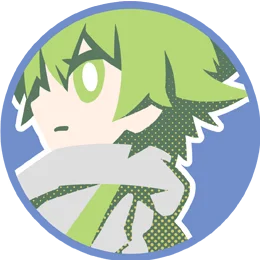
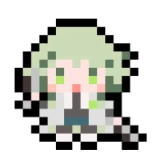
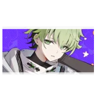
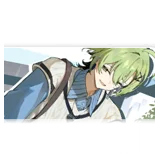
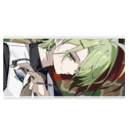
本地未收录该角色的语音台词。